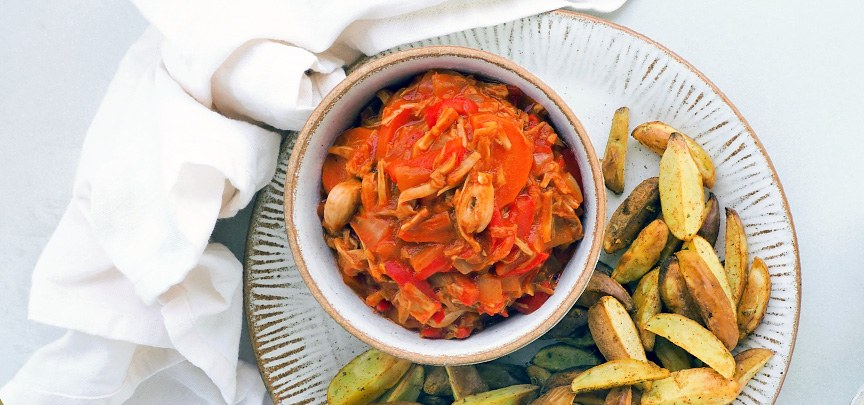

Vegan stoofvlees met Jackfruit

Ingrediënten
- 2 blikken jackfruit
- 1 winterpeen
- 2 rode paprika's
- 1 ui
- 3 teentjes knoflook
- 500 ml groentebouillon
- 1 blikje tomatenpuree
- 1 lauriersblad
- 3 kruidnagels
- 1 eetlepel sojasaus
- 1 eetlepel suiker
- snuf gerookt paprikapoeder
- 2 eetlepels bloem
Bereiding
- Spoel de stukken jackfruit af en laat uitlekken. Verwijder de harde stukken van de jackfruit en trek deze met je handen een beetje uit elkaar. Meng de stukjes jackfruit met wat peper, zout en de bloem. Snijd de winterpeen in halveringen en de paprika in stukjes. Snipper de ui en snijd de knoflook fijn.
- Verwarm een braadpan op het vuur met wat olie of boter en bak hierin de stukjes jackfruit circa 5 minuten. Haal deze daarna uit de pan en zet aan de kant. Voeg aan diezelfde pan nog wat extra olie of boter toe en fruit hierin de ui en knoflook. Doe de paprika en wortel erbij en bak even mee.
- Voeg vervolgens het gerookt paprikapoeder, tomatenpuree, sojasaus en suiker toe en laat dit ook even meebakken. Voeg daarna de stukjes jackfruit weer terug aan de pan, samen met de groentebouillon, laurierblad en kruidnagels (tip: doe de kruidnagels in het laurierblad, zo raak je ze niet kwijt en kun je ze er makkelijker uithalen). Laat dit minimaal 30 minuten zachtjes stoven met de deksel op de pan. Roer af en toe door.
- Verwijder het laurierblad en de kruidnagels uit de pan en serveer de stoof met aardappelpuree, gebakken aardappelen of frietjes en wat (vegan) mayonaise.